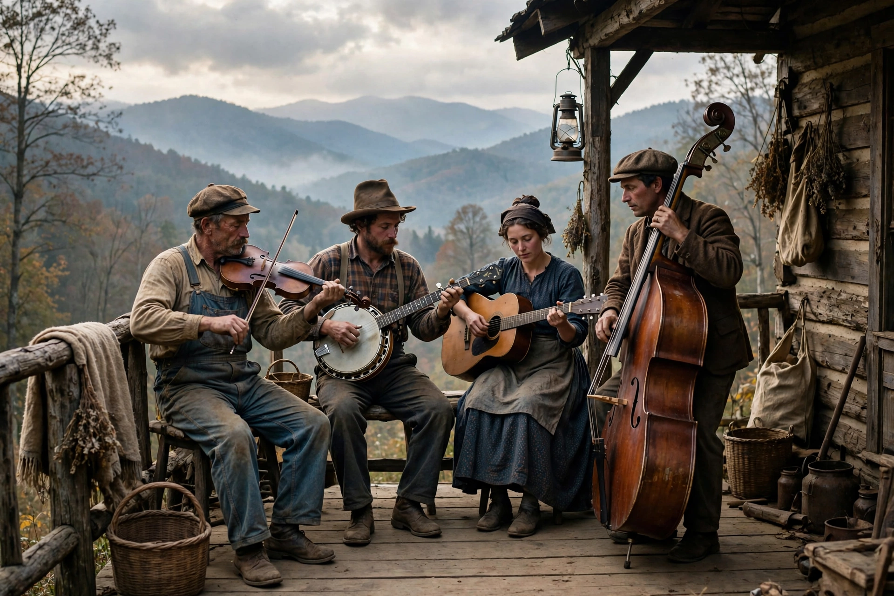

Old-time music is a genre of North American folk music rooted in the folk traditions of British, Irish, Scottish and African music carried to the Appalachian region and other parts of North America. It developed alongside square dancing in the 19th century and was performed on fiddle, banjo, guitar, mandolin and upright bass. Old-time music is a direct precursor of bluegrass and a major tributary of country music.
| Old-time music | |
|---|---|
 An old-time string band | |
| Stylistic origins | British and Irish folk, African-American music, minstrelsy |
| Cultural origins | 19th century, Appalachia, United States |
| Typical instruments | Fiddle, banjo, guitar, mandolin, double bass |
The repertoire grew from Anglo-Celtic dance tunes, ballads and hymnody, enriched by African-American banjo technique — the banjo itself derives from West African lutes — and by ragtime and blues. In the 1920s the recording industry's "hillbilly" catalogues captured string bands such as the Skillet Lickers, Charlie Poole and the North Carolina Ramblers, and the Carter Family, whose 1927 Bristol Sessions are often called the "big bang" of country music. The term "old-time" was a record-industry label for the older, pre-radio style.
Unlike bluegrass, which emphasises virtuosic solo breaks, old-time performance stresses ensemble rhythm and melody played in unison for dancers. Fiddle tunes — reels, breakdowns, waltzes and marches — form the core repertoire, alongside songs drawn from ballad and gospel traditions.
The folk revival of the 1950s–60s, the rediscovery of masters such as Tommy Jarrell of North Carolina, and cornerstone recordings by the New Lost City Ramblers sparked an enduring revival. Today old-time jams and festivals — notably at Clifftop, West Virginia, and Mount Airy, North Carolina — sustain a participatory culture of tune-sharing, distinct regional styles (Round Peak, Galax, West Virginia, Kentucky) and instrument building.
See also: Clawhammer, American folk music